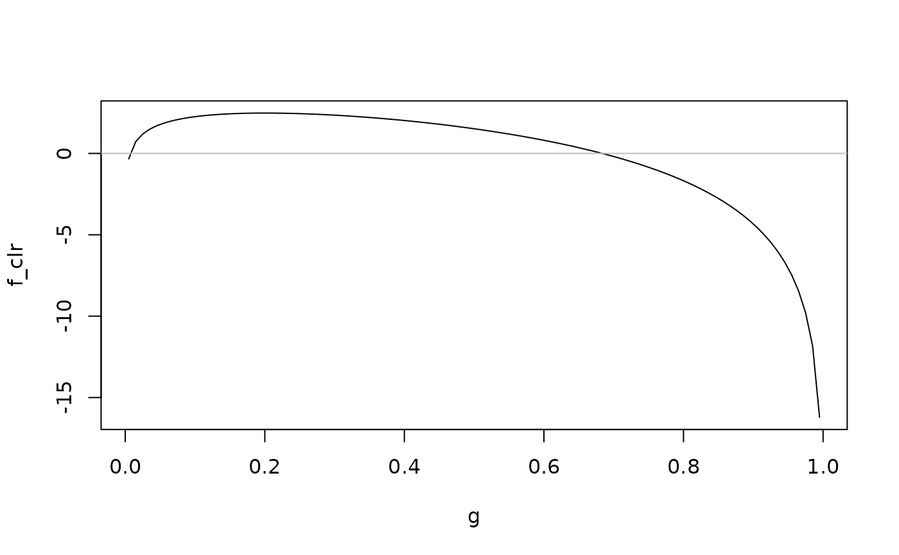
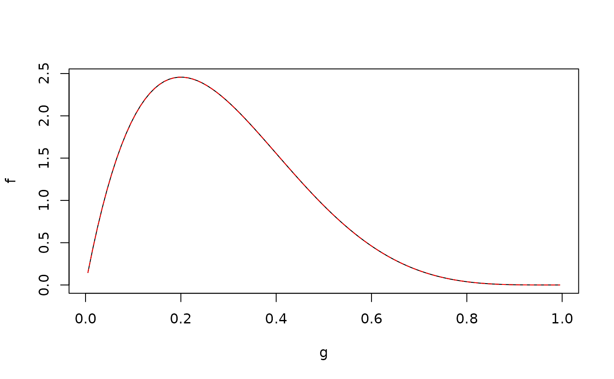

clr computes the clr or inverse clr transformation of a vector f
with respect to integration weights w, corresponding to a Bayes Hilbert space
\(B^2(\mu) = B^2(\mathcal{T}, \mathcal{A}, \mu)\).
Arguments
- f
a vector containing the function values (evaluated on a grid) of the function \(f\) to transform. If
inverse = TRUE,fmust be a density, i.e., all entries must be positive and usuallyfintegrates to one. Ifinverse = FALSE,fshould integrate to zero, see Details.- w
a vector of length one or of the same length as
fcontaining positive integration weights. Ifwhas length one, this weight is used for all function values. The integral of \(f\) is approximated via \(\int_{\mathcal{T}} f \, \mathrm{d}\mu \approx \sum_{j=1}^m\)w\(_j\)f\(_j\), where \(m\) equals the length off.- inverse
if
TRUE, the inverse clr transformation is computed.
Details
The clr transformation maps a density \(f\) from \(B^2(\mu)\) to \(L^2_0(\mu) := \{ f \in L^2(\mu) ~|~ \int_{\mathcal{T}} f \, \mathrm{d}\mu = 0\}\) via $$\mathrm{clr}(f) := \log f - \frac{1}{\mu (\mathcal{T})} \int_{\mathcal{T}} \log f \, \mathrm{d}\mu.$$ The inverse clr transformation maps a function \(f\) from \(L^2_0(\mu)\) to \(B^2(\mu)\) via $$\mathrm{clr}^{-1}(f) := \frac{\exp f}{\int_{\mathcal{T}} \exp f \, \mathrm{d}\mu}.$$ Note that in contrast to Maier et al. (2021), this definition of the inverse clr transformation includes normalization, yielding the respective probability density function (representative of the equivalence class of proportional functions in \(B^2(\mu)\)).
The (inverse) clr transformation depends not only on \(f\), but also on the
underlying measure space \(\left( \mathcal{T}, \mathcal{A}, \mu\right)\),
which determines the integral. In clr this is specified via the
integration weights w. E.g., for a discrete set \(\mathcal{T}\)
with \(\mathcal{A} = \mathcal{P}(\mathcal{T})\) the power set of
\(\mathcal{T}\) and \(\mu = \sum_{t \in T} \delta_t\) the sum of dirac
measures at \(t \in \mathcal{T}\), the default w = 1 is
the correct choice. In this case, integrals are indeed computed exactly, not
only approximately.
For an interval \(\mathcal{T} = [a, b]\)
with \(\mathcal{A} = \mathcal{B}\) the Borel \(\sigma\)-algebra
restricted to \(\mathcal{T}\) and \(\mu = \lambda\) the Lebesgue measure,
the choice of w depends on the grid on which the function was evaluated:
w\(_j\) must correspond to the length of the subinterval of \([a, b]\), which
f\(_j\) represents.
E.g., for a grid with equidistant distance \(d\), where the boundary grid
values are \(a + \frac{d}{2}\) and \(b - \frac{d}{2}\)
(i.e., the grid points are centers of intervals of size \(d\)),
equal weights \(d\) should be chosen for w.
The clr transformation is crucial for density-on-scalar regression since estimating the clr transformed model in \(L^2_0(\mu)\) is equivalent to estimating the original model in \(B^2(\mu)\) (as the clr transformation is an isometric isomorphism), see also the vignette "FDboost_density-on-scalar_births" and Maier et al. (2021).
References
Maier, E.-M., Stoecker, A., Fitzenberger, B., Greven, S. (2021): Additive Density-on-Scalar Regression in Bayes Hilbert Spaces with an Application to Gender Economics. arXiv preprint arXiv:2110.11771.
Examples
### Continuous case (T = [0, 1] with Lebesgue measure):
# evaluate density of a Beta distribution on an equidistant grid
g <- seq(from = 0.005, to = 0.995, by = 0.01)
f <- dbeta(g, 2, 5)
# compute clr transformation with distance of two grid points as integration weight
f_clr <- clr(f, w = 0.01)
# visualize result
plot(g, f_clr , type = "l")
abline(h = 0, col = "grey")

# compute inverse clr transformation (w as above)
f_clr_inv <- clr(f_clr, w = 0.01, inverse = TRUE)
# visualize result
plot(g, f, type = "l")
lines(g, f_clr_inv, lty = 2, col = "red")

### Discrete case (T = {1, ..., 12} with sum of dirac measures at t in T):
data("birthDistribution", package = "FDboost")
# fit density-on-scalar model with effects for sex and year
model <- FDboost(birth_densities_clr ~ 1 + bolsc(sex, df = 1) +
bbsc(year, df = 1, differences = 1),
# use bbsc() in timeformula to ensure integrate-to-zero constraint
timeformula = ~bbsc(month, df = 4,
# December is followed by January of subsequent year
cyclic = TRUE,
# knots = {1, ..., 12} with additional boundary knot
# 0 (coinciding with 12) due to cyclic = TRUE
knots = 1:11, boundary.knots = c(0, 12),
# degree = 1 with these knots yields identity matrix
# as design matrix
degree = 1),
data = birthDistribution, offset = 0,
control = boost_control(mstop = 1000))
# Extract predictions (clr-transformed!) and transform them to Bayes Hilbert space
predictions_clr <- predict(model)
predictions <- t(apply(predictions_clr, 1, clr, inverse = TRUE))